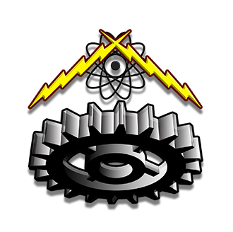

INSTITUTO POLITÉCNICO NACIONAL
CECYT 10 "CARLOS VALLEJO MÁRQUEZ"

Inicio
Sustentabilidad en México
Sustentabilidad en Estados Unidos
Sustentabilidad en el mundo
ENERGÍA RENOVABLE
AGRICULTURA
CONSTRUCCIÓN SOSTENIBLE
CONTAMINACIÓN EN ESTADOS UNIDOS
PLAN BIDEN